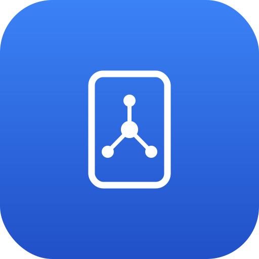

ROS 2 Mobile (“the app”) turns your Android phone into a ROS 2 node: it reads sensors you choose and publishes them as ROS 2 topics on a network you control. This policy explains exactly what the app does with your data.
The app only accesses a sensor when you enable its topic. Each maps directly to a ROS 2 message you asked it to publish:
| Permission / sensor | Used for | When |
|---|---|---|
| Location (GPS) | sensor_msgs/NavSatFix | only while the GPS topic is on |
| Camera | sensor_msgs/CompressedImage (JPEG) + sensor_msgs/CameraInfo | only while the camera topic is on |
| Microphone | audio_common_msgs/AudioData | only while the audio topic is on |
| Motion sensors (accelerometer, gyroscope, magnetometer) | sensor_msgs/Imu, sensor_msgs/MagneticField | only while those topics are on |
| Environment sensors (barometer, ambient light, proximity) | sensor_msgs/FluidPressure, Illuminance, Range | only while those topics are on, if the device has them |
| Battery state | sensor_msgs/BatteryState | only while that topic is on |
When a topic is off, the app does not read that sensor.
When you tap Go Live, the app connects to the IP address and middleware you specified and publishes the enabled topics to that destination. This is the only place your data is sent. The app is publish-only and has no backend server of its own. The developer never receives, stores, or has access to any sensor data.
Because the destination is your own ROS 2 system, you are responsible for securing that network. ROS 2 traffic on a LAN is unencrypted by default; do not publish over an untrusted network.
The app stores your connection settings locally (target IP, namespace, ROS domain, and which topics are enabled) using Android’s standard preferences storage. This information stays on your device and is never transmitted anywhere. Uninstalling the app removes it.
The app does not share or sell any data to third parties. No data is collected by the developer.
The app is a developer tool for robotics and is not directed at children.
If this policy changes, the updated version will be posted at this page.
For questions about this policy, contact the developer through the app's Google Play store listing.